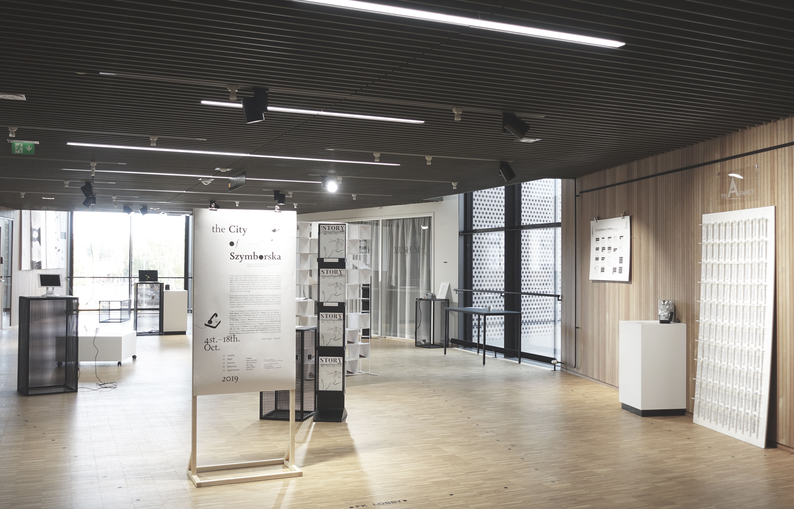

>EXHIBITION
Behind
the
Utopia
Data Visualization
for
Design Museum
in Helsinki
Group work with
Juuso Koponen
Qin Yang
Lilla Tóth
September 2018
The City
of
Szymborska
Experimental poetry visualization +
World building
Solo exhibition in
Väre,Otaniementie 14, Espoo,Finland
October 2019

The city of Szymborska
, Aalto University, 2019
Behind the Utopia
, Design Museum, 2018
☺